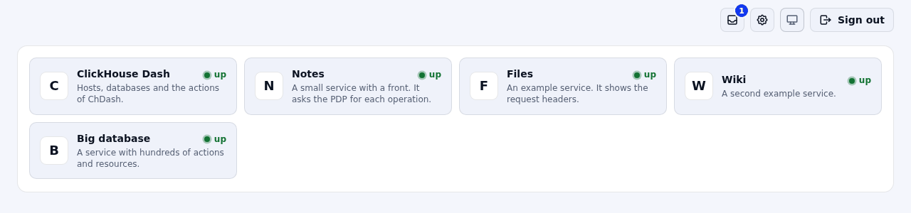
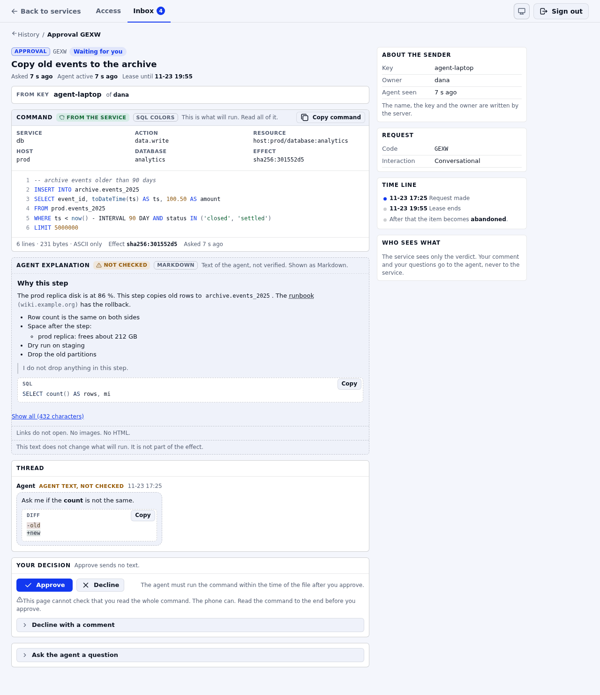

Version 5.6.0 Part of ProcurAuth
portal
One program signs people in, guards your services, gives keys to AI agents and sends alerts to phones.
A key never has more rights than the person who owns it. One static binary, one configuration file, one database.
$ tools/build.sh image$ deploy/compose/init-secrets.sh$ docker compose up -dhttp://127.0.0.1:4181/auth/loginThe gate, the keys and the inbox in one binary
portal is the backend, the edge and the decision point of ProcurAuth. It needs Traefik for TLS and routing, and nothing else.
A gate for every service
Traefik asks portal about each request. portal answers from memory with the grants of the person. A new user has no grant. A service never handles a password.
Keys that follow their owner
A program or an AI agent acts with a key. The key never has more rights than its owner. It can have ceilings, and budgets that portal counts.
Alerts and approvals on a phone
Senders post alerts. Each subscribed phone shows each alert one time. An agent can ask the owner of its key to approve an action, on the phone or on a web page.
One call of an agent
The agent never talks to the decision point. portal gives the service a signed identity token. The service asks one AuthZEN question and applies the answer.

The product
These pictures come from the program with demo data.





What is inside
Each part except the launcher, the gate and the accounts is optional.
- Launcher
Lists the services of the lab from labels and annotations.
- Gate
A Traefik ForwardAuth server with grants on a resource tree.
- Accounts
Argon2id passwords, opaque sessions and a second factor (TOTP).
- PDP
An AuthZEN decision point with limits and approvals.
- Inbox
Alerts, questions and approvals for Android phones.
Start with the guide or with the reference
The configuration is one strict file. The reference is generated from the table of keys in the code.